Bayesian tree inference using the fossilised birth-death process in BEAST2
Contents
- Read the data
- Tip dates
- The site model
- Clock model
- Priors
- MCMC settings
- Evaluating the output
- Next tasks
In this exercise we’ll estimate a time tree of bears under the fossilised birth-death (FBD) process. We’ll use a morphological matrix that comprises 62 binary characters for 18 living and fossil bears. We’ll also use age information associated with our taxa, which is also included in this file. Download these files and examine the contents. The exercise is adapted from this tutorial written by Tracy Heath. The original contains lots of useful background information.
For this exercise create a folder called
FBD_exercise_BEAST2 (or whatever you want).
Software
Download the software BEAST2 v2.7, Tracer v1.7 and FigTree if you haven’t done so already. This tutorial uses RevBayes 1.2.3.
BEAST2 uses an xml file as input, containing all the
model specifications, including prior parameters and MCMC settings. You
can create the xml file using the BEAST2 accessory program
BEAUti.
Packages
BEAST2 is similar to RevBayes in providing flexible and modular options for analysing phylogenetic data in a Bayesian framework. One practical difference is the package structure used by BEAST2. There is a suite of models in the core BEAST2 program, but there are many other models available via packages that you can install also using BEAUti.
For the analysis in this tutorial we need to install the
SA and MM packages, both developed by Sasha
Gavryushkina.
Open BEAUTi go to File > Manage Packages, scroll down, select the
SA and MM packages and hit Install at the
bottom. This should bring up a confirmation message.
Restart BEAUTi and we can begin setting up the analysis.
Reading the data
To read in your morphological data, go to File > Add Morphological Data and navigate to your nexus file. (Note I think there’s a bug that prevents you dragging and dropping the data file into to BEAUTi 2.7, at least on my Mac.)
This will bring up a box that says, ‘Would you like to condition on recording variable characters only (Mkv)?’ Ordinarily when we collect morphological data, unlike when we collect DNA sequences, we don’t typically collect non-variable characters. If unaccounted for, this results in a form of ascertainment bias. We can account for this using the ‘v’ (= variable coding) correction. But for the moment select ‘no’, as this correction is more computationally expensive, and BEAST2 and RevBayes handle this in different ways.
If you successfully imported the data, your window should look like this.
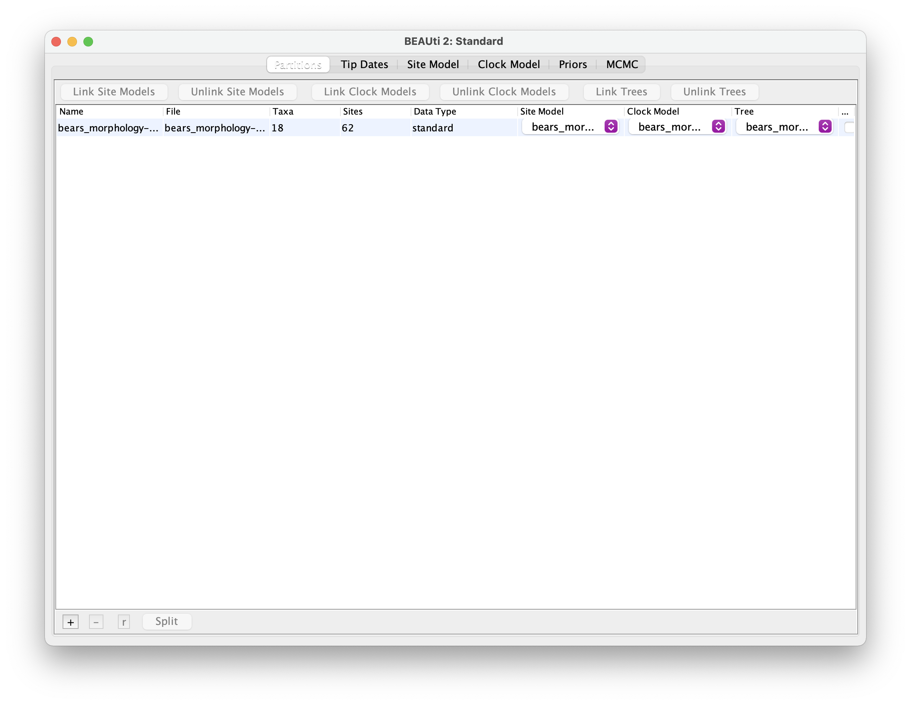
Tip dates
Move on to the Tip Dates panel and select Use tip dates.
You might have noticed that the names in the nexus file are appended by
a number. This is the age information associated with each species.
BEAUti can parse this information.
Select Auto-configure and then use everything > after
last _. Back in the main window make sure to select
Before the present from the drop down menu.
Since some time in the past is used more commonly for
viruses or bacteria.
The tripartite model
Recall that for divergence time estimation we need three model components (the substitution, clock and tree models). You’ll find these in the following BEAUti panels:
- The Site Model panel is for the substitution model
- The Clock Model panel is for the clock model
- The Priors panel is for the time tree model plus all other priors
Important note: there are many more options than the ones you’ll see going through the panels in this tutorial. More options are available via other packages or you can directly edit the xml.
The site model
Head towards the Site Model panel. Because we’re working with discrete morphological data, we’re only presented with a limited set of options.
First select estimate for the Substitution Rate.
We’ll use the Lewis Mk model and we can add the Gamma sites model by
putting the number of desired rate categories into the Gamma Category
Count box – let’s use 4 categories. We also want to
estimate the Shape parameter associated with this model, so select
estimate for this too. The 1.0 in this box
will become the starting value.
When you’re done your window should look like this.
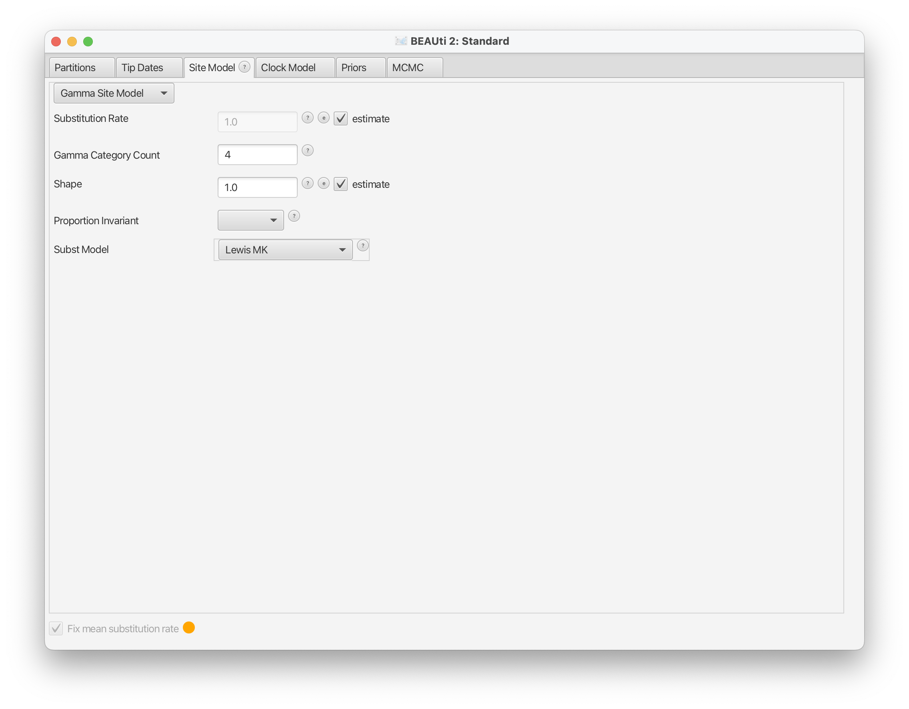
If you had molecular data or multiple partitions, more options would appear in this panel.
Clock model
Move onto the Clock Model panel and simply leave the Strict Clock option in place.
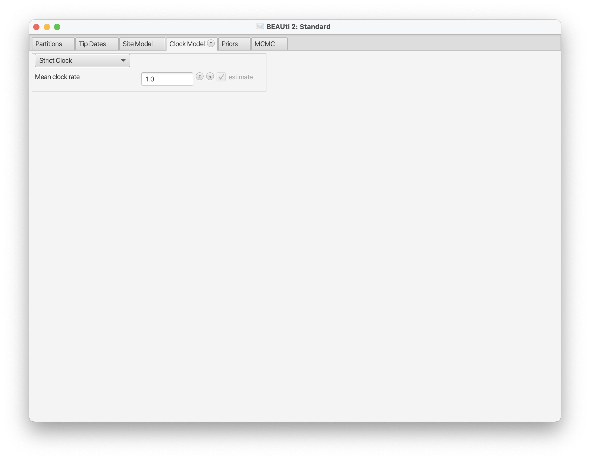
Priors
The Priors panel is where a lot of juicy choices happen. Here you will be presented with the tree model options, along with prior options for all the other parameters associated with the substitution and clock models.
First select the first toggle and select the
Fossilised Birth Death Model from the drop down menu
(you’ll find this at the top of this list). You’ll notice that this adds
a bunch of extra parameters to the list.
First let’s concentrate on the options under the first toggle. We’ll leave all the default options as they are right now. Under this set up, we’re parametrising the model using the diversification, turnover and sampling proportion option. We’re also fixing Rho. You can leave this as 1.0, since we sample all living bears.
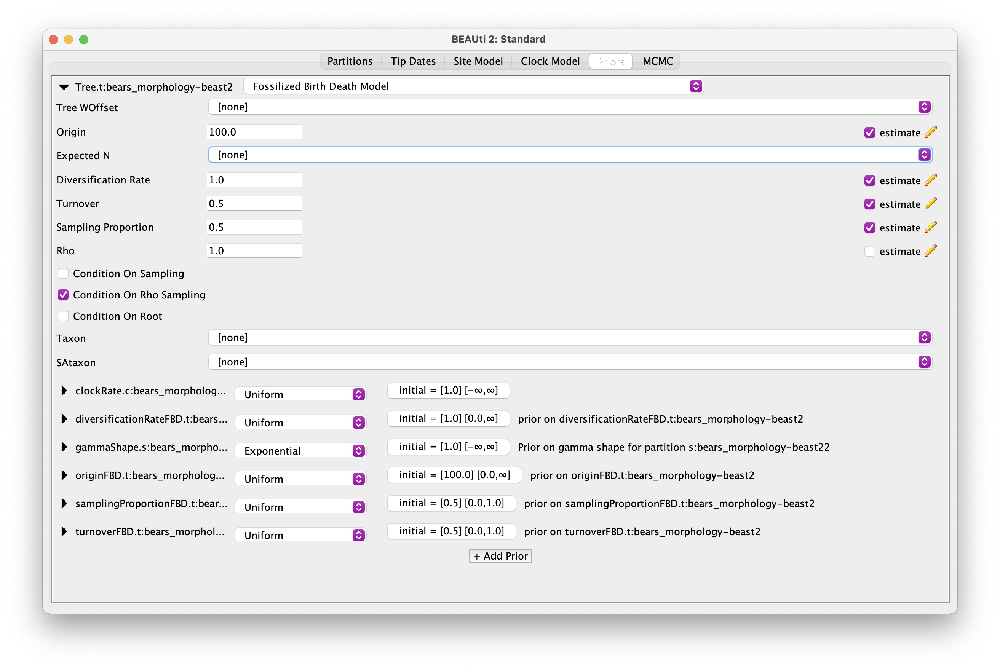
Now we’ve set up the tree model, let’s move onto set up all the other priors. These are presented below the tree model toggle in alphabetical order. I’ll go through them in the following order: substitution model, clock model, FBD model. Remember that it’s bad practice to stick with the default priors without, unless you have good reason to.
First let’s deal with the prior on the shape parameter of the Gamma sites model. For this we’ll use an exponential distribution with a mean of = 1.
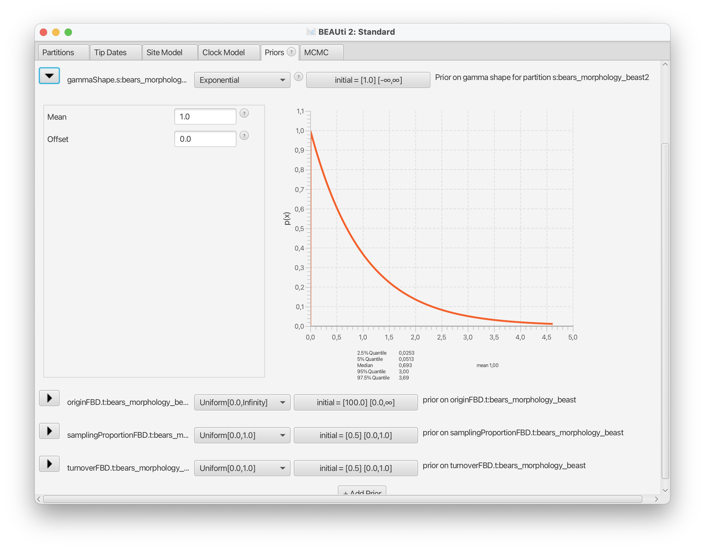
Select the clock rate. The default prior on this is a uniform distribution between 0 and infinity - this is obviously not a good prior for this parameter! Let’s use an exponential prior with a mean of 0.01, since rates of morphological evolution tend to be low.
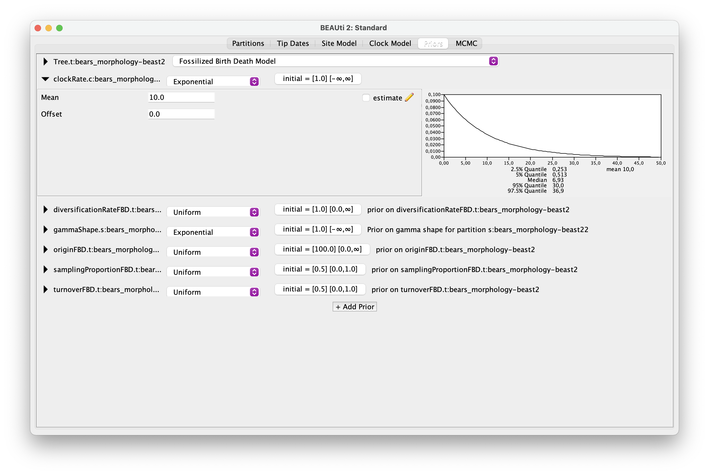
Next we’ll define all the priors of the FBD model parameters, starting with the diversification rate. Let’s use a gamma prior for this with shape and scale parameters \(\alpha\) = 2.0 and \(\beta\) = 0.1, resulting in a mean around 0.1.
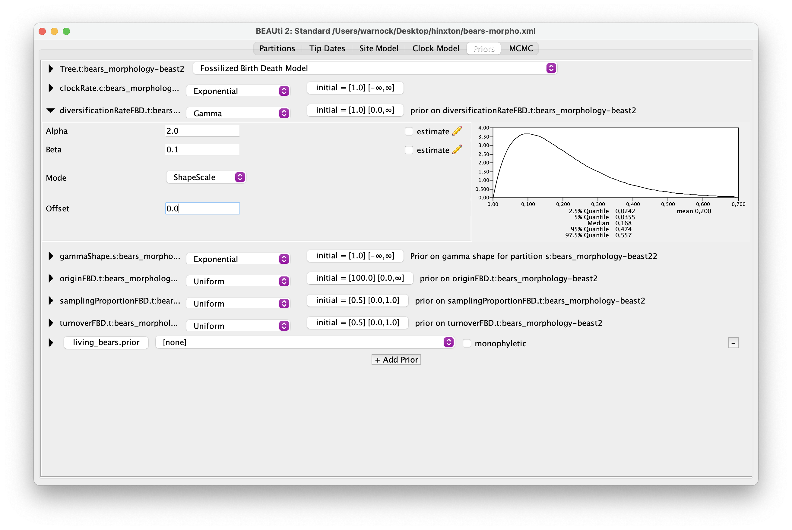
Then let’s look at the sampling proportion and turnover parameters. These both lie between 0 and 1, so the default prior of a uniform distribution between 0 and 1 is a reasonable choice, in the absence of other information about these parameter values. We’ll leave these as they are.
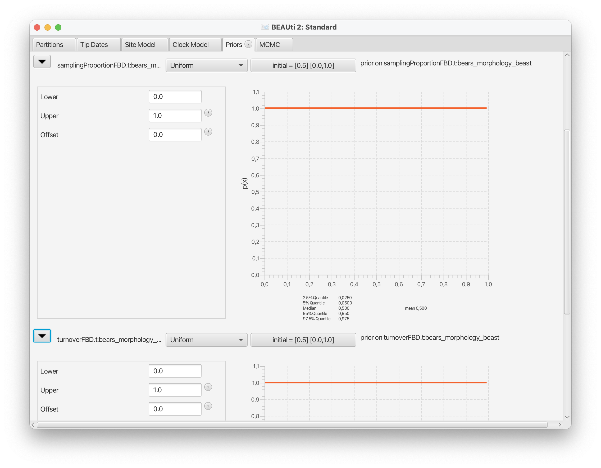
Now we’ll specify a uniform prior on the origin time parameter. We’ll
use the oldest bear fossil as a minimum (= 35.0) and a recent estimate
for the age of carnivores as a maximum (= 55.0). We also need to ensure
the starting value for the origin is within these bounds. This is
currently set to 100, in the box that says
initial = [100.0]. Change it to something like 40, so it
doesn’t fall outside the minimum and maximum values and fail to
initialise.
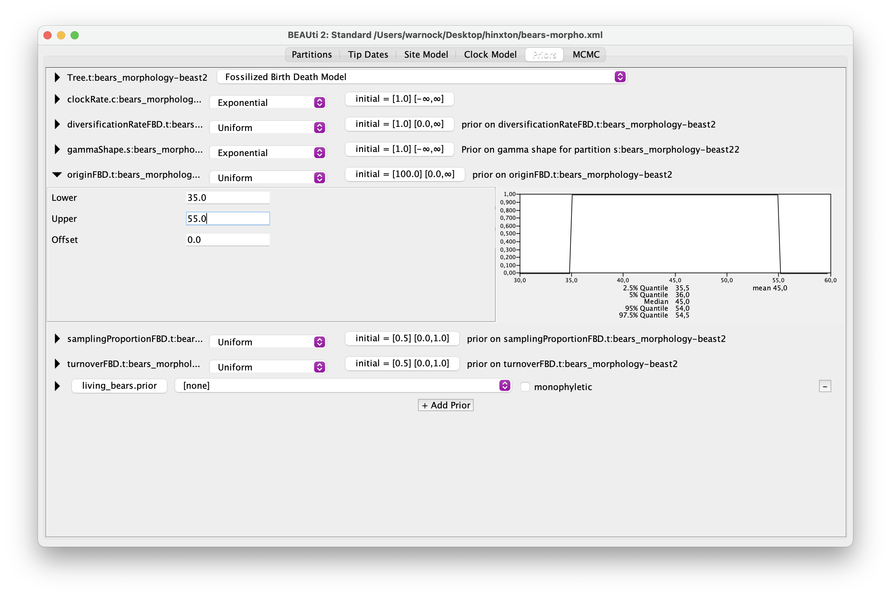
Finally, we’ll create a clade constraint to monitor the age of all
living bears. Click + Add Prior and select MRCA (= most
recent common ancestor) prior. Put the following 8 taxa on the righthand
side: Ailuropoda melanoleuca, Tremarctos ornatus,
Melursus ursinus, Ursus arctos, Ursus
maritimus, Helarctos malayanus, Ursus americanus,
Ursus thibetanus. Give the clade a label, e.g.,
living_bears.

Leave the monophyletic box unchecked because we don’t
want to enforce the monophyly of this group, as there might be fossils
that also belong to this clade. Note this is how you define nodes for
specifying node calibrations in BEAUti. After defining a clade, you can
then select a distribution from the drop down menu associated with your
node. See this
tutorial for more details.
MCMC settings
Navigate to the MCMC panel to finalise the set up. Our dataset is
small, so let’s go with 1000000 for the Chain Length. Leave
the Store Every and Pre Burnin options as they are.
You can then use the tracelog and treelog
toggles to specify the logging frequency. Let’s change the logging
frequency for both of these to 10000, so we end up with
10000 posterior samples. You can also change the output file names here.
The trees file will keep the same prefix as the log file if you don’t
change the default $(tree).
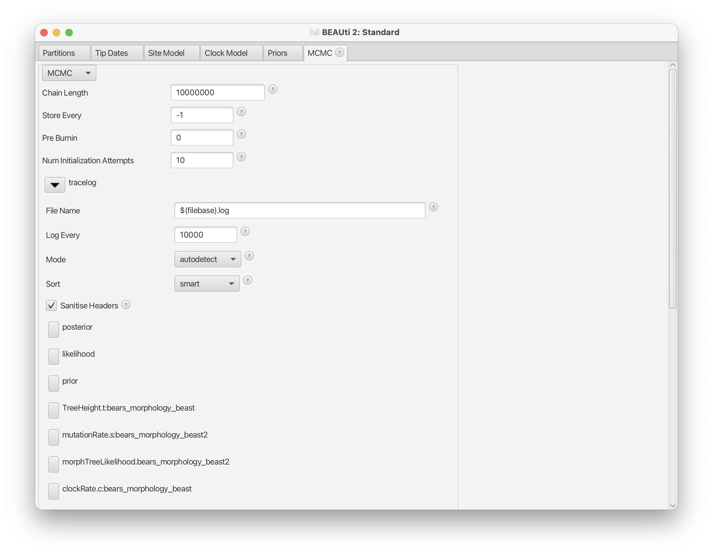
Exporting the xml
To create the input file for BEAST2 we need to export the
xml file. Simply go to File > Save As and navigate to
where you want to save the file on your computer.
Leave BEAUti open for now. If you have time, you can come back and set up more analyses using the molecular data.
Running BEAST2
Open the program BEAST. This will open a window that gives you the
option to select your xml file. Navigate to your xml file and click
Run!
The analysis might take a while to run. Meanwhile, you could move on to the Next tasks.
Evaluating the output
As before, open your .log file in Tracer.
It should look something like this.
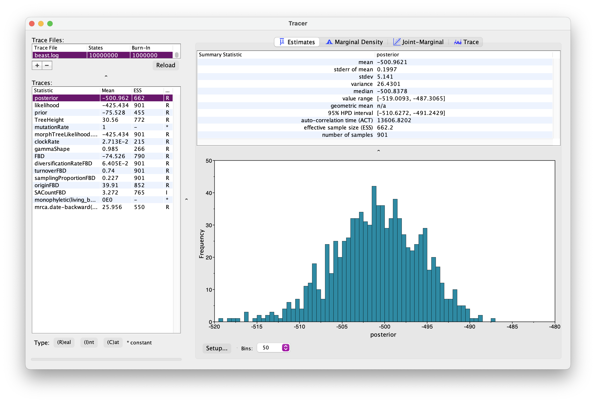
Explore the output. Can you identify the different parameters? Has the analysis converged?
What is the age of the most common recent ancestor of bears?
Processing the trees files
Next let’s generate a summary tree. BEAST has another accessory
program called TreeAnnotator. Open this up. Add a burnin of 10%. From
the Target tree type menu leave the default Maxmimum clade
credibility (MCC) tree option and from the Node heights menu select
Keep target heights (this is because a posterior with lots
of uncertainty, which is expected when we have a small morphological
matrix, can result in negative branch length if we choose median node
ages). Next select your .trees file as the Input Tree File
and create a file name for your output (e.g.,
bears_morphology_MCC.tre).
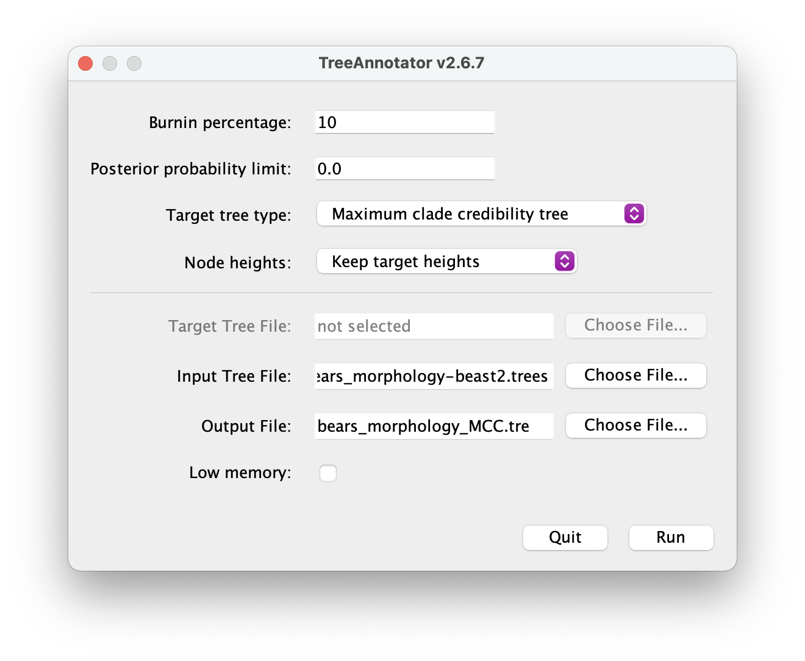
Once you have your summary tree open it in FigTree and play around with the settings. See if you can get something that looks like this.
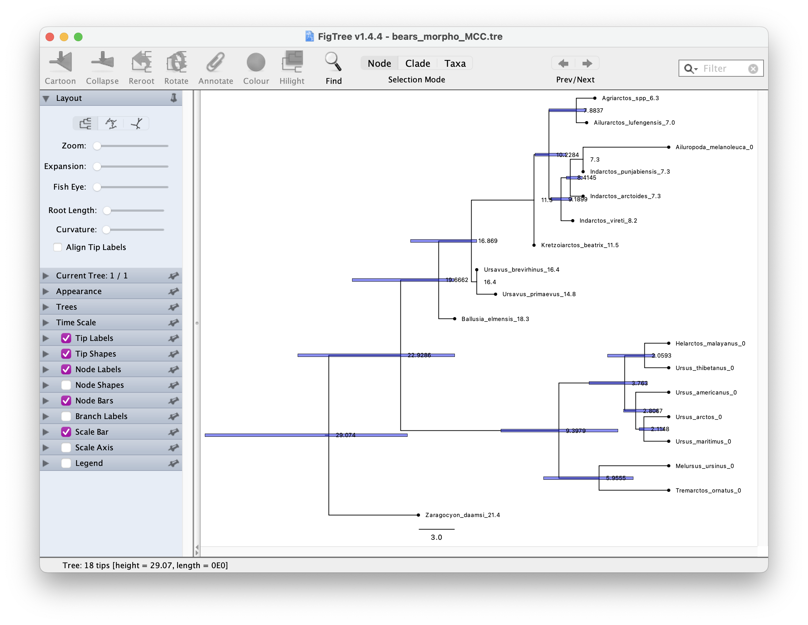
Which candiates on your tree do you think might be sampled ancestors?
Next tasks
Running the analysis under the FBD model only
To run the analysis “under the prior”, navigate to the MCMC panel
back in BEAUti. At the bottom of this panel you should see a check box
next to Sample From Prior. Select this option, change your
output file names and export a new xml. Run this in BEAST2 as
before.
Note it’s a bit funny to refer to this as “under the prior” because the fossil ages are data but BEAST2 doesn’t consider the FBD as part of the likelihood it prints out, so you can still choose the regular option for running the analysis under the prior to distinguish the signal coming from the FBD/fossil age data vs. the FBD combined with the sequence/morpho data.
Do you notice any differences in the output? In the event you don’t observe a large difference in the output, how would you interpret this?
Add molecular sequence data
Let’s try repeating this analysis with molecular sequence data. We have an alignment with 2 genes (cytb and irbp) for 10 living bear species.
Unfortunately there’s currently a bug in BEAUti that makes it tricky to link the tree across partitions, so we will use precooked output from an analysis of the molecular data only for this part of the tutorial. You can download this here.
What differences do you notice in your output?